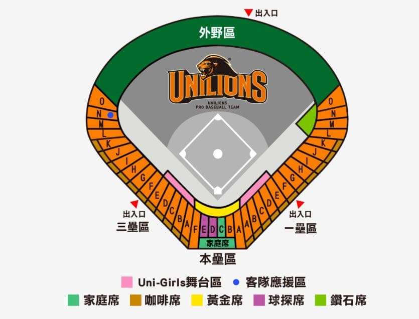

票價資訊(請依售票網為準)
| 區域 | 一般票價 | 會員票價 | 備註 |
|---|---|---|---|
| 內野特區 | NT$ 600 | NT$ 550 | 包含精美紀念品 |
| 內野一壘側 | NT$ 500 | NT$ 450 | - |
| 內野三壘側 | NT$ 500 | NT$ 450 | - |
| 外野座席 | NT$ 300 | NT$ 270 | - |
| 看台區 | NT$ 200 | NT$ 180 | 不指定座位 |
票價說明
- 12歲以下兒童、65歲以上長者及身心障礙者享有半價優惠
- 3歲以下幼兒免費入場，但不提供座位
- 團體購票（20張以上）享有9折優惠
- 特殊賽事（如明星賽、總冠軍賽）票價另計
球場資訊

台南棒球場
地址：台南市南區健康路一段257號
電話：(06) 215-3399
交通方式
自行開車
國道1號→台南交流道→健康路
大眾運輸
搭乘台南市公車5號、18號至棒球場站下車
停車資訊
球場周邊設有收費停車場，建議提早到場停車或使用大眾運輸工具
臺南天氣預報
正在載入天氣預報...
資料來源：中央氣象署
常見問題
如何退換票？
比賽前三天可至購票處辦理退換票，需收取票價10%手續費。比賽當日不受理退換票。
遇雨延賽如何處理？
若比賽因雨延期，原票券可於補賽時使用。若無法參加補賽，可於原定比賽日起14天內辦理退票。
是否可攜帶食物入場？
可攜帶簡易食物及飲料入場，但禁止攜帶酒精飲料、玻璃容器及超過1公升的飲料容器。